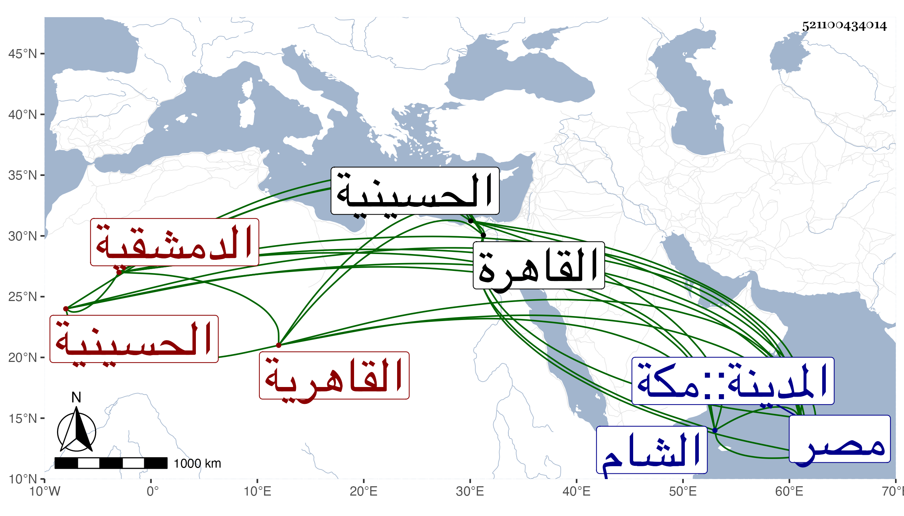

0902Sakhawi.DawLamic.ITO20230111-ara1.EIS1600.521100434014
Biography ID: 521100434014
208
رقية ابنة الشرف محمد بن المسند أبي الحسن علي بن محمد بن هرون بن محمد بن هرون بن علي بن حميد الثعلبي الدمشقية الأصل القاهرية ويعرف أبوها وجدها بابن القارئ من بيت حديث بل عمها أبو الفرج عبد الرحمن مسند القاهرة وهي زوج القطب عبد الكريم بن محمد بن الحافظ القطب الحلبي . ذكرها شيخنا في معجمه وقال ذكر لي حميد الدين حماد التركماني أنه وقف على استدعاء فيه اسمها وأن من جملة من أجاز لها يحيى بن يوسف بن المصري فاستجزت منها على يد بعض أصحابنا وكتب عنها فشاع ذلك من يومئذ وقرأ عليها بعض أصحابنا ثم أكثروا عنها فلما كان في سنة سبع وعشرين حضرت عندي في محاكمة فرأيتها تامة القامة مستوية العقل وذكر لي أهلي أنه لم يظهر عليها الكبر وان أكثر ما يمكن أن يكون سنها ما بين الستين والسبعين فتوقفت في الرواية عنها لذلك وجوزت أن يكون حماد وهم فانه لو صحت إجازتها من ابن المصري لا قتضى أن يكون مولدها سنة ست وثلاثين وهي السنة التي مات فيها وتكون قد جازت التسعين وأيضا فان زوجها لم يدرك اجازة ابن المصري وأن كان ولد في سنة وفاته فالله أعلم بحقيقة الحال ، ثم وضح لي بطلان الاجازة وان الامر اشتبه على حماد فوقفت على استدعاء مؤرخ بسنة احدى وسبعين كتب فيه شيوخ ذلك العصر من الحرمين والشام ومصر ومن جملتهم زوجها فكتب عن نفسه وعنها وعين أن مولدها بالحسينية فهو كما سبق في ترجمته وهي في رمضان سنة أربعين نعم الذي يظهر أن لها إجازة من شيوخ ذلك العصر وسماعا أيضا فانها كما قدمت من بيت الحديث والرواية سيما وقد استجازها المحدثون قديما من الاوان المشار اليه وهلم جرا انتهى . وكان شيخنا الزين رضوان المستملي يميل لصحة روايتها عن ابن المصري ويحتاج إلى دليل والميل لما قاله شيخنا أكثر . ماتت قريب الثلاثين وعينه بعضهم بسنة اثنتين وثلاثين ، وهي في عقود المقريزي وجزم بأن مولدها في رمضان سنة إحدى وأربعين رحمها الله وإيانا .
